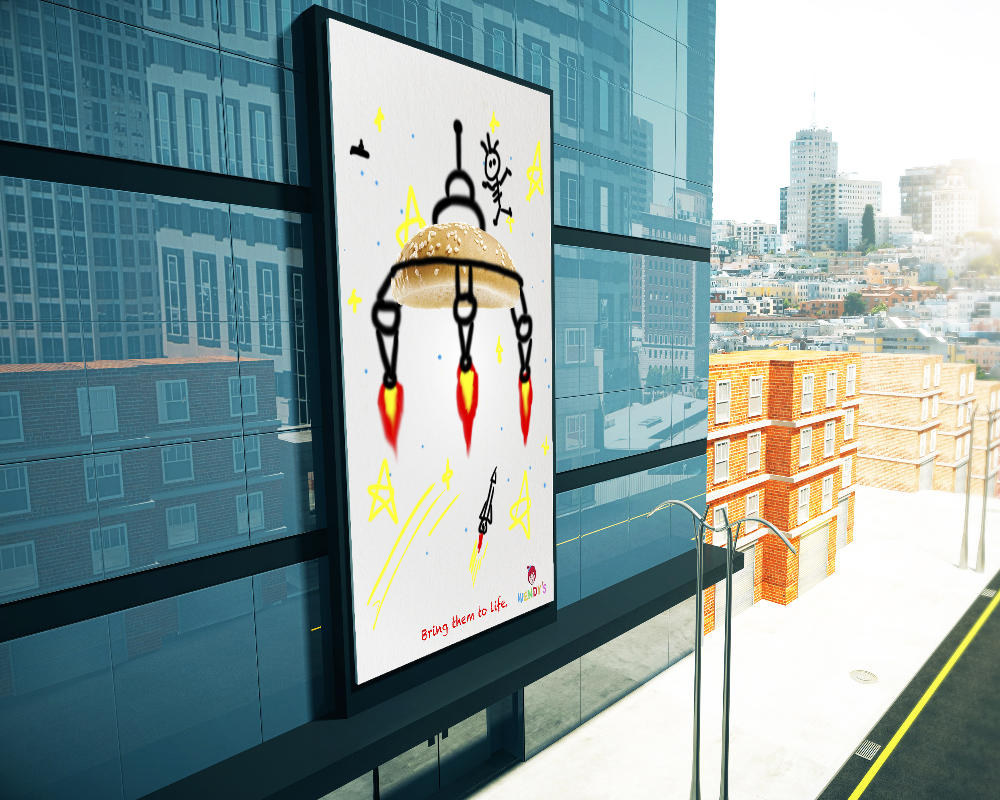

WENDY'S
PROJECT DESCRIPTION
Re-lunching Wendy's for Kids:
The advertisement's target audience is kids and their parents. Kids like to play with everything even food, but their parents don't like that. We encourage kids to fully use their imagination and do anything with these food. Since then, the design tend to kids-friendly and mimic their drawing style.
Project Director: Joel Tretin
The advertisement's target audience is kids and their parents. Kids like to play with everything even food, but their parents don't like that. We encourage kids to fully use their imagination and do anything with these food. Since then, the design tend to kids-friendly and mimic their drawing style.
Project Director: Joel Tretin
MOCK UP


ORIGINAL WORK


SKETCHES
Original idea shows below: Food as other objects. Fries as weapon, bun as a shield etc.